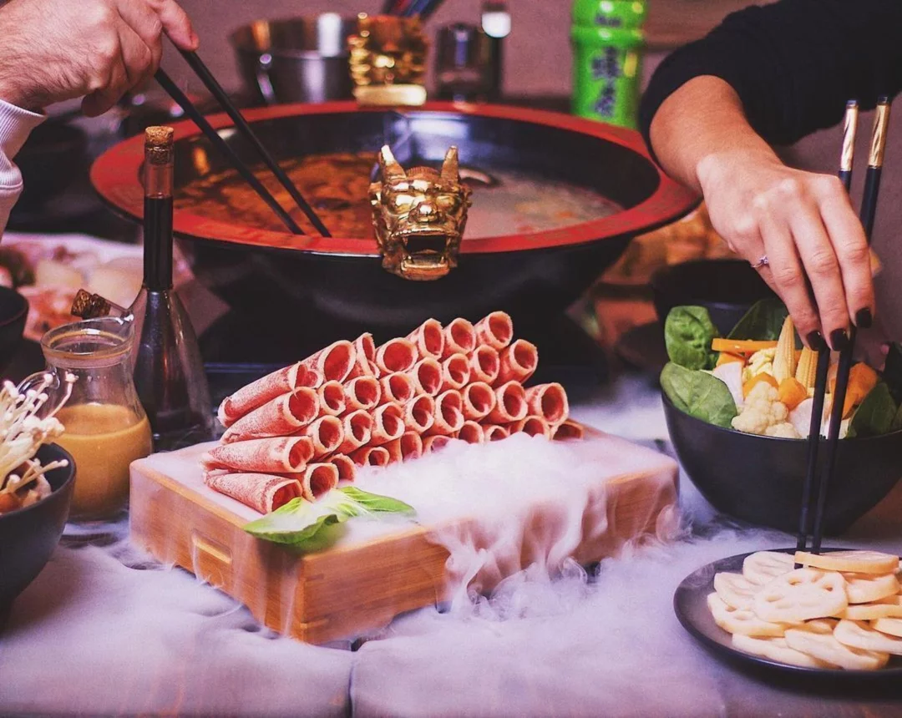
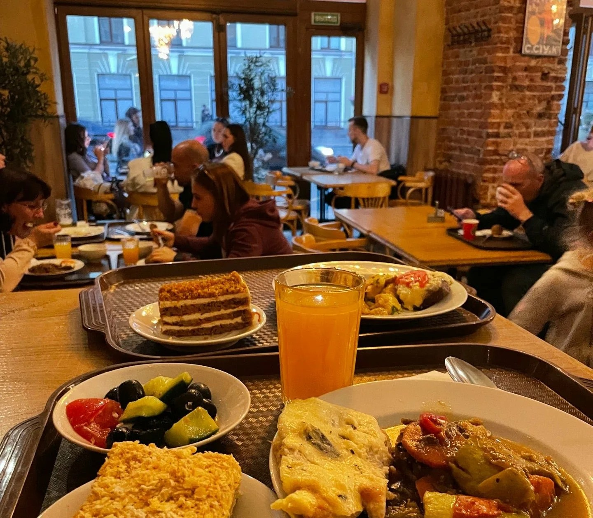

ОгоХого
«ОгоХого» — аутентичный ресторан китайской кухни на Васильевском острове: уникальное место, где гости сами варят ингредиенты в традиционном «китайском самоваре» с ароматными бульонами.
Адрес: Санкт‑Петербург, 1-я линия В.О., д. 32, ст. метро «Василеостровская» / «Спортивная».
Контакты: +7 (812) 963-54-44 или ogohogo.ru.
Режим работы: Ежедневно, с 12:00 до 23:00. Столики требуется бронировать заранее.
Средний чек: 1500 рублей.

Столовая № 1
«Столовая № 1» — популярная сеть бюджетных кафе быстрого обслуживания в Санкт‑Петербурге: сытные и простые блюда домашней кухни в формате самообслуживания, которые выручают туристов и местных жителей в любое время суток.
Адрес: Санкт‑Петербург, сеть насчитывает множество филиалов по всему городу, ищите ближайший на картах (основные точки расположены на Невском проспекте, Лиговском проспекте и у ключевых станций метро).
Контакты: Контакты разных филиалов отличаются, будьте внимательны.
Режим работы: Ежедневно, круглосуточно.
Средний чек: 350 рублей.
